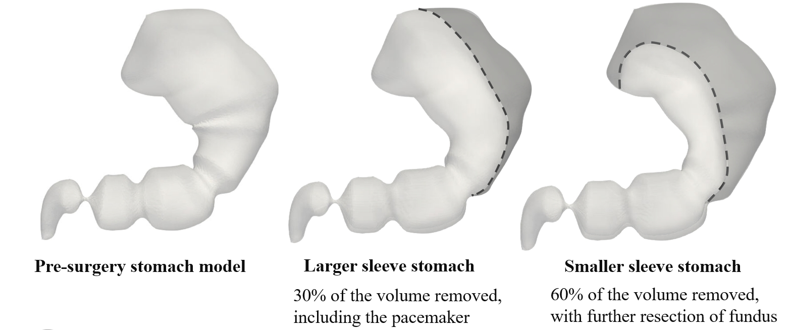
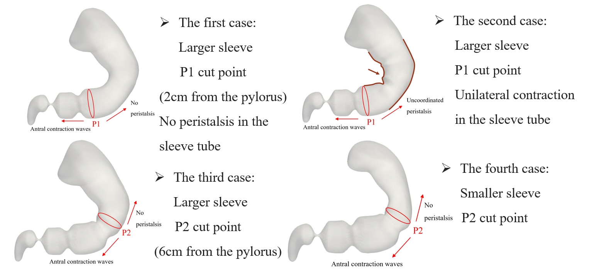

I am a master's student at Johns Hopkins, delving into the fascinating world of biofluid mechanics through computational fluid dynamic tools under the guidance of Dr. Rajat Mittal and Dr. Jung-Hee Seo.
I obtained my Bachelor's degree in Theoretical and Applied Mechanics at the Southern University of Science and Technology (SUSTech), where I began my research journey and laid the groundwork for my passion for fluid dynamics.
In 2022-2023, I had the privilege of spending a transformative year as a full-time visiting student at MIT, where I not only excelled in my coursework but also worked with Prof. Mick Follows, contributing to the study titled “Intraspecific Diversity in Thermal Performance Determines Phytoplankton Ecological Niche,” which has been submitted to Ecology Letters.
Driven by a deep curiosity for unraveling the complexities of fluid behavior, my research interests revolve around computational fluid dynamics, biofluids, multiphase flows, and scientific computing. I am dedicated to developing state-of-the-art simulation techniques to investigate disease-related biofluid dynamics, providing valuable insights for medical diagnosis and aiding in the improvement of surgical planning.
Research
Laparoscopic Sleeve Gastrectomy and Multiphase Flows in Stomach
The geometry and motility of the stomach play a critical role in the digestion of ingested liquid meals. Sleeve gastrectomy, a common bariatric surgery, significantly alters the stomach’s structure and motility, which can impact gastric emptying and digestion. This study investigates the changes in stomach geometry and gastric motility resulting from laparoscopic sleeve gastrectomy (LSG) and their impact on digestion and gastric emptying using multiphase flow simulations.
The pre-surgery stomach model was developed using MRI data. Based on this, we constructed two post-surgery models using Blender (v4.1). 30% of the volume has been removed in the larger sleeve stomach, and more than 60% of volume has been removed in the smaller one.

Four post-surgery scenarios were explored, including cases with a complete loss of peristalsis in the sleeve tube, uncoordinated contractions in the sleeve, differences in fundus volume, and variations in the regions where antral contraction waves were preserved.

Simulations were conducted using an immersed-boundary flow solver, modeling a liquid meal to analyze changes in gastric content mixing and emptying rates. Our research has unveiled intriguing findings, demonstrating that varying degrees of gastric volume reduction and impaired motility distinctly influence the stomach's transport, mixing, and emptying processes, which are closely tied to the weight loss outcomes of bariatric surgery. A manuscript detailing these insights is currently in preparation—stay tuned for more exciting results!
Large-eddy Simulation with Wall Model in Lattice Boltzmann Method for Turbulent Channel Flow PDF
Turbulent flows are essential in various engineering applications, and accurately predicting these flows is key to optimizing the design and performance of various engineering systems. This research focuses on simulating turbulent channel flow using a combination of Large-eddy Simulation (LES) and wall models within the context of Lattice Boltzmann Method (LBM). This approach enables efficient and accurate simulation of turbulence with reduced computational resources compared to traditional methods like Direct Numerical Simulation (DNS).
This study implemented the Smagorinsky sub-grid scale model and the Musker wall model into a customized DNS code package of Lian-ping Wang's group. The LES method captures large-scale turbulent structures and models the smaller, unresolved scales, while the wall model provides accurate near-wall flow behavior, significantly reducing the required grid resolution.

The LES method effectively captured the streamwise velocity profiles, showing excellent agreement with DNS and published data. Notably, the LES method accurately resolved the flow in both the viscous sublayer and the logarithmic layer.

The turbulent Reynolds stress profiles demonstrated that the LES approach could replicate essential flow characteristics.

The root-mean-square velocity profiles for different flow components (streamwise, transverse, and spanwise) were found to be consistent with DNS data, further validating the LES method’s ability to capture turbulence intensity.

The near-wall velocity gradient, modeled using the Musker wall function, aligned well with theoretical expectations, demonstrating that the wall model can predict near-wall behavior without the need for a high-resolution grid in that region.

A detailed comparison of turbulent viscosity showed that the LES approach approximated the turbulent-to-molecular viscosity ratio, confirming that the method was capable of accurately modeling turbulence even with a coarser grid. These results demonstrate that the combination of LES and wall models in LBM provides a robust framework for simulating turbulent channel flows efficiently and accurately. This approach has significant potential for future applications in more complex turbulent flow simulations, such as urban canopy flows or higher Reynolds number cases.